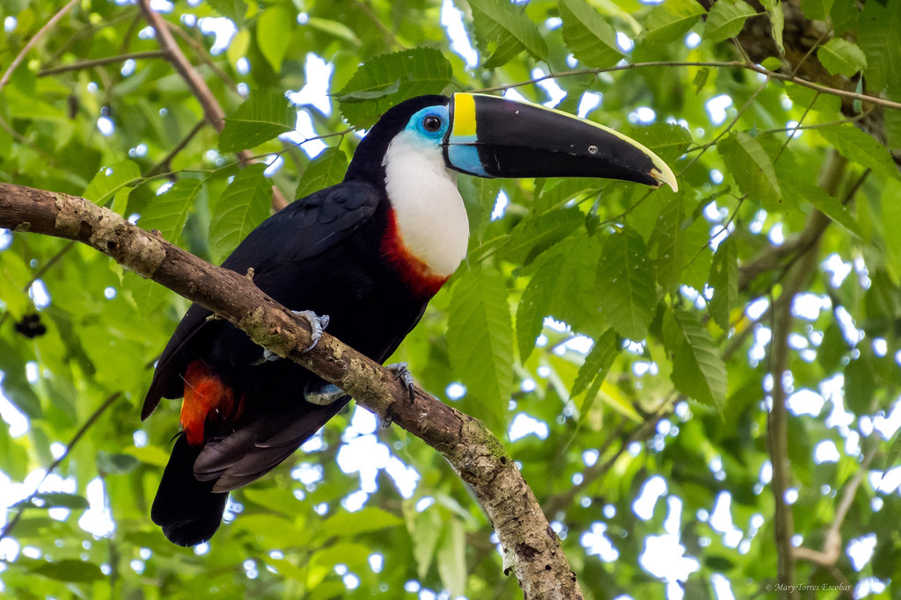
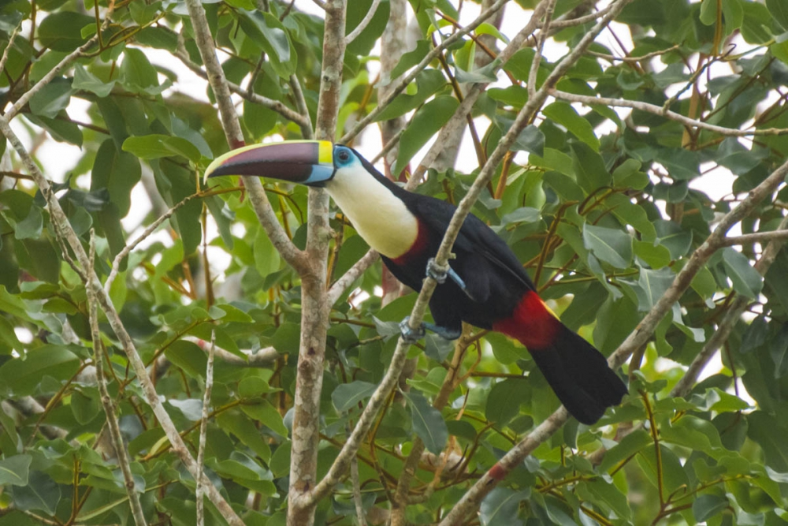
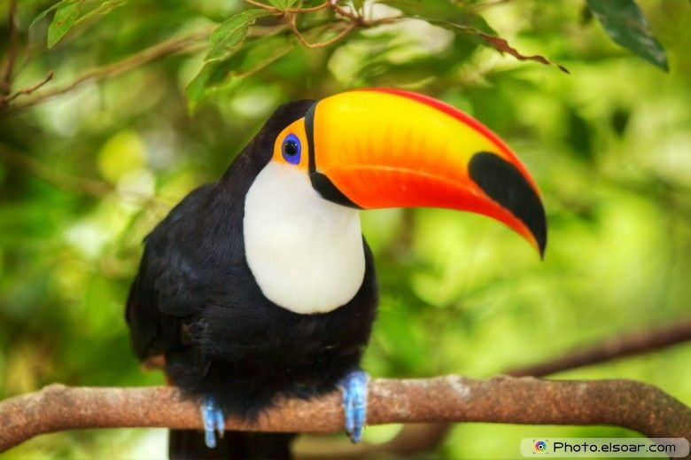
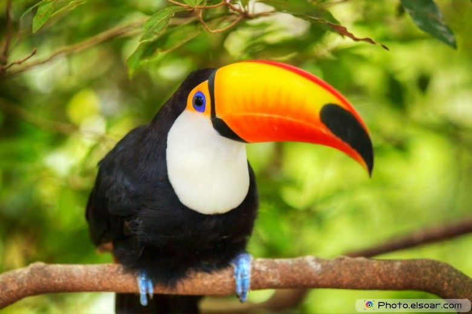
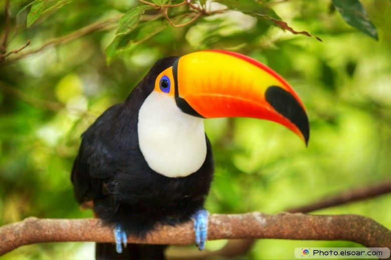

White-throated toucan


 


About
The White-throated Toucan (Ramphastos tucanus) is a vibrant bird species that inhabits the lush landscapes of South America, particularly sprawling across the Amazon Basin, and extending into the Tocantins and Araguaia River regions. This bird is typically found in the dense, humid tropical forests but has shown adaptability by extending its habitat into neighboring woodlands and riverine forests within the cerrado, showcasing its ability to thrive in a variety of forested environments. Its preference for humid forest areas contributes to its unique lifestyle and diet, which predominantly consists of fruits, insects, and sometimes small reptiles.
Characterized by its striking black and yellow plumage and large, distinctive bill, the White-throated Toucan plays a crucial role in its ecosystem, especially in seed dispersal, which aids in the regeneration of the forest. Despite its significant ecological role and remarkable features, the White-throated Toucan faces challenges due to deforestation and habitat fragmentation, which threaten its population in some areas. Conservation efforts are vital to ensure the survival of this species and the overall health of their rainforest habitats. The White-throated Toucan remains a symbol of the exotic biodiversity found in South America's rainforests, captivating birdwatchers and nature enthusiasts worldwide.
The White-throated Toucan is a symbol of the Amazonian rainforest, notable for its striking color contrast and sizeable bill which serves various ecological functions, from feeding to mating displays. Residing in the vast, biodiverse expanse of the Amazon Basin, this species plays a crucial role in forest ecology through seed dispersal, aiding in the regeneration of its habitat. Despite its robust appearance and adaptability to different forest environments, the White-throated Toucan, like many rainforest dwellers, faces threats from habitat destruction and deforestation, underlining the importance of conservation efforts in their native regions.
Taxonomic order
- Initial Description:
- Described by Carl Linnaeus in 1758 in his work Systema Naturae.
- Placed in the genus Ramphastos.
- Binomial name: Ramphastos tucanus.
- Specified habitat as South America, with type locality later restricted to Suriname.
- Genus and Species Name Origins:
- Genus name Ramphastos derived from the Ancient Greek "rhamphēstēs," meaning "snouted," due to the bird's distinctive bill.
- Species epithet "tucanus" comes from Guarani, possibly meaning "bonenose."
- Subspecies:
- Red-billed toucan (R. t. tucanus): Located in southeastern Venezuela, the Guianas, and northern Brazil.
- Cuvier's toucan (R. t. cuvieri):Found from western Venezuela to northern Bolivia. Initially described as a separate species.
- Inca toucan (R. t. inca):Present in northern and central Bolivia. Originally described as a separate species.
- Taxonomic Debate:
- BirdLife International's HBW treats the red-billed toucan as a species (R. tucanus) and the other two as subspecies of "Cuvier's toucan" (R. cuvieri).
- Historically considered separate species, but now mostly recognized as subspecies due to interbreeding between red-billed and Cuvier's toucans.
- The status of the Inca toucan is debated, with some considering it a stable hybrid between the other two.
Scientific Classification
- Domain: Eukaryota
- Kingdom: Animalia
- Phylum: Chordata
- Class: Aves
- Order: Piciformes
- Family:Ramphastidae
- Genus:Ramphastos
- Species: R. tucanus
- Binomial name:Ramphastos tucanus (Linnaeus, 1758)